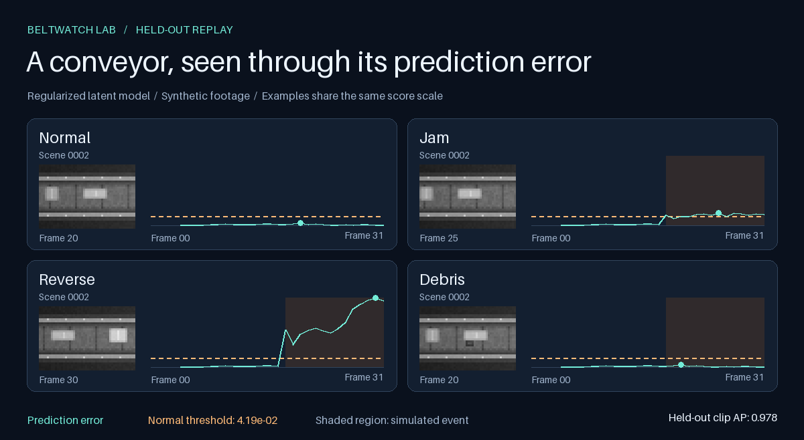

A small experiment in video prediction
Learning what
should happen next.
A conveyor moves. A model learns to expect that movement. Stop the belt, reverse it, or drop something on it—and see which changes the model notices.
BeltWatch Lab is a 15,136-parameter video model trained only on normal synthetic footage. It runs on a CPU. You can inspect the experiment here without installing anything.
The model catches most simulated faults. A simple motion rule catches more. Keeping both results is the point of this experiment.
The footage and the forecast
Open the full replayStart with a normal clip, then switch to a fault. The line shows prediction error; the dashed line is the alert threshold. Shading marks the simulated fault, so you can compare an alert with what actually happened.
Choose a clip and detector, then press Play or drag the frame slider. The first four frames give each detector context. Scoring starts with the fifth frame.
The browser replays recorded scores. Running the project locally trains and evaluates the model in Python.
How the model predicts the next frame
Technical methodA frame encoder turns each image into 16 numbers. A small predictor looks at the last four encoded frames and estimates the next set of numbers. Once the next frame arrives, the model compares its prediction with that frame’s actual encoding.
A large mismatch raises the score. During evaluation, the simulator’s labels tell us which of those high scores coincide with a real change in the clip.
- 1
Watch normal runs
The model sees moving parcels and a textured belt, with variation in lighting, layout, speed, and noise.
- 2
Learn to predict
The predictor starts from the most recent encoding and learns a correction. It can only use past frames.
- 3
Keep the encoding useful
A Gaussian regularizer penalizes the easy but useless answer: encode every frame in almost the same way.
- 4
Set an alert threshold
Separate normal clips set the cutoff. Fault clips enter only at evaluation, after the model and threshold are fixed.
BeltWatch adapts the training objective to a small convolutional encoder that learns from conveyor frames alone. The original study used a larger model to learn from video and control actions. LeWorldModel (2026)
How the detectors compare
Download metricsThe learned model detects 83.8% of simulated faults and alerts on 8.8% of normal clips. Removing SIGReg leaves the encoder nearly collapsed. But the strongest detector here is a short pixel-shift calculation that matches how the simulator moves.
| Detector | Clip AUROC | Frame AP | Faults detected | Normal clips alerted |
|---|---|---|---|---|
| Latent predictor + SIGReg Learned | 0.927 | 0.913 | 83.8% | 8.8% |
| Same model, without SIGReg | 0.487 | 0.401 | 11.7% | 10.0% |
| Repeat the previous frame | 0.497 | 0.365 | 6.7% | 10.0% |
| Extrapolate pixel changes | 0.603 | 0.380 | 19.2% | 12.5% |
| Fit a fixed horizontal shift Motion rule | 1.000 | 1.000 | 100.0% | 7.5% |
What do the metrics mean?
Clip AUROC measures how well the detector ranks a faulty clip above a normal one, independent of a chosen threshold. A score of 0.5 is chance-level ranking; 1.0 is perfect ranking on this test set.
Frame AP is average precision across scored frames. It asks whether high-scoring frames tend to fall inside faults, and depends on the proportion of fault frames.
Faults detected counts faulty clips with an alert during the actual fault interval. Normal clips alerted counts normal clips with any alert. Those rates use the calibrated threshold.
Why the motion rule wins
The simulated belt normally moves at a constant horizontal speed. The rule can estimate that speed from the first four frames. Comparing later frames against the same shift catches every simulated fault in this run.
What the model misses
Jams and reversals were easier than small debris: recall was 96.25%, 100%, and 55% respectively. The replay includes the same paired scene for each fault, including a debris example that the learned model misses.

All test footage is synthetic. The 80 normal clips give a noisy estimate of false alarms, and fault variants from the same scene share their starting frames.
Run the benchmark locally
The reference run took about 37 seconds on an Intel i5-10300H with two CPU threads. That includes training both models, setting thresholds, scoring the test clips, and writing the replay.
Installation and testsgit clone https://github.com/sandeshbagmare/beltwatch-lab.git
cd beltwatch-lab
python -m pip install --upgrade "setuptools>=84.1"
python -m pip install torch --index-url https://download.pytorch.org/whl/cpu
python -m pip install .
python -m beltwatch run --out runs/my-benchmarkUse a new output folder for each run. Add --quick for a smaller smoke test. The output includes weights, metrics, a figure, and the standalone replay.
Papers and follow-up questions
How would the detectors handle acceleration, camera movement, or a different belt layout? Answering that would take a benchmark with more varied motion and scenes.
LeWorldModel
Next-embedding prediction and Gaussian regularization. This is the training rule BeltWatch adapts.
Related work / August 2026 preprintLeVJEPA
Gaussian regularization applied to video pretraining with multiple views and token dropping.
Related work / July 2026Learning from normal videos
Fine-grained video anomaly detection from normal data. BeltWatch keeps generated faults for evaluation only.